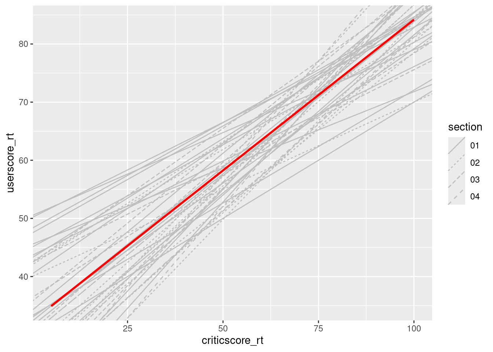
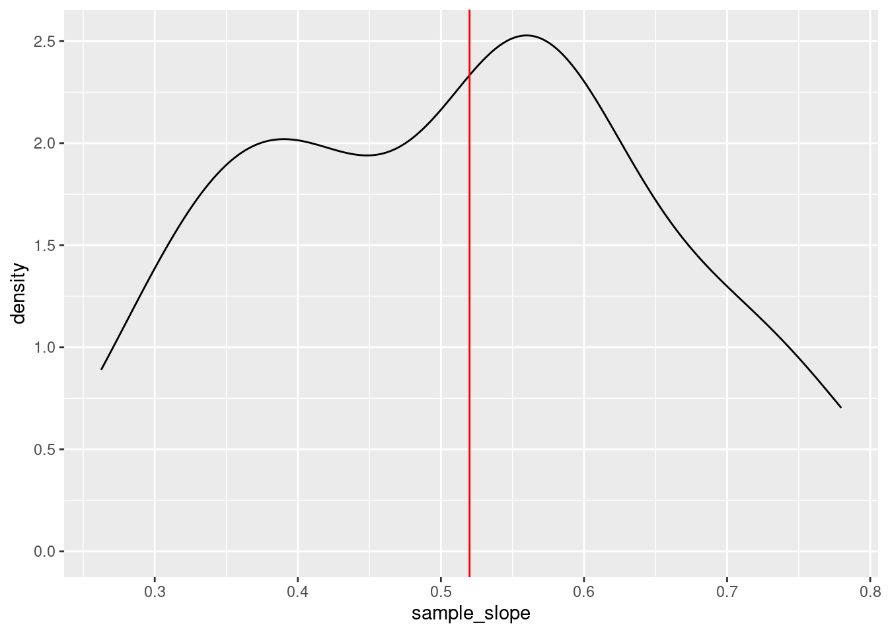

library(ggplot2)
shaded_normal <- function(mean, sd, a = NULL, b = NULL){
min_x <- mean - 4*sd
max_x <- mean + 4*sd
a <- max(a, min_x)
b <- min(b, max_x)
ggplot() +
scale_x_continuous(limits = c(min_x, max_x), breaks = c(mean - sd*(0:3), mean + sd*(1:3))) +
stat_function(fun = dnorm, args = list(mean = mean, sd = sd)) +
stat_function(geom = "area", fun = dnorm, args = list(mean = mean, sd = sd), xlim = c(a, b), fill = "blue") +
labs(y = "density") +
theme_minimal()
}The Normal model & sampling variation
Notes
Learning goals
- Recognize the difference between a population parameter and a sample estimate.
- Review the Normal probability model, a tool we’ll need to turn information in our sample data into inferences about the broader population.
- Explore the ideas of randomness, sampling distributions, and standard error through a class experiment. (We’ll define these more formally in the next class.)
Readings and videos
Please do the following videos and reading before class.
- Reading: Section 6 Introduction, and Section 6.6 in the STAT 155 Notes
- Video 1: exploration vs inference
- Video 2: Normal probability model
Exercises: Review
Let’s practice some Normal model concepts.
First, run the following chunk which defines a shaded_normal() function which is specialized to this activity alone:
Exercise 1: Using the Normal model
Suppose that the speeds of cars on a highway, in miles per hour, can be reasonably represented by the Normal model with a mean of 55mph and a standard deviation of 5mph from car to car:
\[ X \sim N(55, 5^2) \]
shaded_normal(mean = 55, sd = 5)- Provide the (approximate) range of the middle 68% of speeds, and shade in the corresponding region on your Normal curve. NOTE:
ais the lower end of the range andbis the upper end.
shaded_normal(mean = 55, sd = 5, a = ___, b = ___)- Use the 68-95-99.7 rule to estimate the probability that a car’s speed exceeds 60mph.
Your response here
# Visualize
shaded_normal(mean = 55, sd = 5, a = 60)- Which of the following is the correct range for the probability that a car’s speed exceeds 67mph? Explain your reasoning.
- less than 0.0015
- between 0.0015 and 0.025
- between 0.025 and 0.16
- greater than 0.16
Explain your reasoning here
# Visualize
shaded_normal(mean = 55, sd = 5, a = 67)Exercise 2: Z-scores
Inherently important to all of our calculations above is how many standard deviations a value “X” is from the mean.
This distance is called a Z-score and can be calculated as follows:
\[ \text{Z-score} = \frac{X - \text{mean}}{\text{sd}} \]
For example (from Exercise 1), if I’m traveling 40 miles an hour, my Z-score is -3. That is, my speed is 3 standard deviations below the average speed:
(40 - 55) / 5Consider 2 other drivers. Both drivers are speeding. Who do you think is speeding more, relative to the distributions of speed in their area?
- Driver A is traveling at 60mph on the highway where speeds are N(55, 5^2) and the speed limit is 55mph.
- Driver B is traveling at 36mph on a residential road where speeds are N(30, 3^2) and the speed limit is 30mph.
Put your best guess (hypothesis) here
- Calculate the Z-scores for Drivers A and B.
# Driver A
# Driver B- Now, based on the Z-scores, who is speeding more? NOTE: The below plots might provide some insights.
# Driver A
shaded_normal(mean = 55, sd = 5) +
geom_vline(xintercept = 60)
# Driver B
shaded_normal(mean = 30, sd = 3) +
geom_vline(xintercept = 36) Your response here
Exercises: Sampling variation
The fandango dataset in the fivethirtyeight package includes information about the ratings of 143 films released in 2014-2015 across the review sites Fandango, IMDB, RottenTomatoes, and MetaCritic.
Our goal will be to model the relationship between the RottenTomatoes “Tomatometer” rating (an aggregate of official film critic scores), and the RottenTomatoes “User Rating,” which averages the ratings of anyone who uploaded their rating to the site.
# Load the data
library(fivethirtyeight)
data(fandango)
fandango <- fandango %>%
dplyr::select(film,
userscore_rt=rottentomatoes_user,
criticscore_rt=rottentomatoes)
# Plot the relationship
fandango %>%
ggplot(aes(x = criticscore_rt, y = userscore_rt)) +
geom_point() +
geom_smooth(method = "lm", se = FALSE)
# Model the relationship
m1 <- lm(userscore_rt ~ criticscore_rt, data = fandango)
summary(m1)Exercise 3: Parameter vs estimate
It’s important to note that this dataset is by no means a comprehensive collection of films and their review scores–it does not contain every film that was released from 2014-2015, nor films released outside of that date range. The review scores are also frozen in time–all of these films have almost certainly accumulated additional reviews since the data were first collected.
However, our stated goal is to make inferences about the overarching relationship between critic reviews and user reviews for all films (relatedly, we may want to use our model to make predictions about how user reviews are affected by critic reviews for films that may not even exist yet!). Can we actually make these inferences/predictions about a potentially infinite collection of films when all we have is a fairly limited subset of these?
Populations and Samples
This question points to two of the most important concepts in the field of statistical inference: populations and samples. Statisticians have many different ways of defining a population (depending on the questions they are asking), but for the purposes of this exercise, we can think of the population as the set of all possible films and all possible review scores that have been or could be catalogued on RottenTomatoes.
Our dataset of 146 films is considered a sample of this population. A sample is simply a subset of observations taken from that population.
“True” parameters versus estimates
In order to conduct statistical inference using linear regression, we must assume that there is some true, underlying, fixed intercept and slope \(\beta_0\) and \(\beta_1\), that describe the true linear relationship in the overall population that we’re interested in.
If we are modeling the relationship between UserScore and CriticScore on RottenTomatoes, The “true” underlying model we assume is thus:
\[ UserScore_i = \beta_0 + \beta_1 CriticScore_i + e_i \]
However, the “true” values of \(\beta_0\) and \(\beta_1\) are typically impossible to know, because knowing them requires access to our entire population of interest (in this case, the review scores for every film that has been or will be released). When we fit a regression model using the sample that we do have, we are actually obtaining estimates of those true population parameters (note the notation change of putting a \(\hat{ }\) on top of the Betas, to indicate that this is an estimate):
\[ E[UserScore \mid CriticScore] = \hat{\beta}_0 + \hat{\beta}_1 CriticScore \]
where our estimates are given by our model as \(\hat{\beta}_0 = 32.3%\), \(\hat{\beta}_1 = 0.52%\)
For the sake of this activity, let’s assume that these estimates are identical to the true population parameters.
üö©üö©üö© HOWEVER, be very careful not to make this assumption in other models you encounter.For this dataset, recall the specific sampling criteria that were used, which means these 146 films likely aren‚Äôt representative of the full population of films we‚Äôre interested in. This means that the estimates we obtained probably don‚Äôt match the true population parameters‚Äìthey may or may not be close, but we don‚Äôt know for certain! üö©üö©üö©
Below, we’ll simulate how parameter estimates are impacted by taking different samples. You’ll each take a random sample of 10 films in the dataset, and we’ll see if we can recover the presumed population parameters (i.e., the coefficient estimates we obtained from our model using all 146 films that were initially sampled).
First, fill in your intuition below:
- Do you think every student will get the same set of 10 films?
Your response here
- Do you think that your coefficient estimates will be the same as your neighbors’?
Your responses here
Exercise 4: Random sampling
- Use the
sample_n()function to take a random sample of 2 films
# Try running the following chunk A FEW TIMES
sample_n(fandango, size = 2, replace = FALSE)Reflect:
- How do your results compare to your neighbors’?
Your response here
- What is the role of
size = 2? HINT: Remember you can look at function documentation by running?sample_nin the console!
Your response here
- What is the role of
replace = FALSE? HINT: Remember you can look at function documentation by running?sample_nin the console!
Your response here
- Now, “set the seed” to 155 and re-try your sampling.
# Try running the following FULL chunk A FEW TIMES
set.seed(155)
sample_n(fandango, size = 2, replace = FALSE)What changed?
Your response here
Exercise 5: Take your own sample
The underlying random number generator plays a role in the random sample we happen to get. If we set.seed(some positive integer) before taking a random sample, we’ll get the same results.
This reproducibility is important:
we get the same results every time we render our qmd
we can share our work with others & ensure they get our same answers
it wouldn’t be great if you submitted your work to, say, a journal and weren’t able to back up / confirm / reproduce your results!
Follow the chunks below to obtain and use your own unique sample.
# DON'T SKIP THIS STEP!
# Set the random number seed to the digits of your own phone number (just the numbers)
set.seed()
# Take a sample of 10 films
my_sample <- sample_n(fandango, size = 10, replace = FALSE)
my_sample # Plot the relationship of UserScore with CriticScore among your sample
my_sample %>%
ggplot(aes(y = userscore_rt, x = criticscore_rt)) +
geom_point() +
geom_smooth(method = "lm", se = FALSE)# Model the relationship among your sample
my_model <- lm(userscore_rt ~ criticscore_rt, data = my_sample)
coef(summary(my_model))[,1]REPORT YOUR WORK
Log your intercept and slope sample estimates in this survey.
Exercise 6: Sampling variation
Recall that we are assuming the population parameters are equal to the estimates we obtained from the model we fit using the initial sample of 146 films:
\[ E[UserScore \mid CriticScore] = 32.3 + 0.52 CriticScore \]
Let’s explore how our sample estimates of these parameters varied from student to student:
# Import the experiment results
library(gsheet)
results <- gsheet2tbl('https://docs.google.com/spreadsheets/d/11OT1VnLTTJasp5BHSKulgJiCbSLiutv8mKDOfvvXZSo/edit?usp=sharing')Plot each student’s sample estimate of the model line (gray). How do these compare to the assumed population model (red)?
fandango %>%
ggplot(aes(y = userscore_rt, x = criticscore_rt)) +
geom_abline(data = results, aes(intercept = sample_intercept, slope = sample_slope, linetype=section), color = "gray") +
geom_smooth(method = "lm", color = "red", se = FALSE)Exercise 7: Sample intercepts
Let’s focus on just the sample estimates of the intercept parameter:
results %>%
ggplot(aes(x = sample_intercept)) +
geom_density() +
geom_vline(xintercept = 32.3, color = "red")Comment on the shape, center, and spread of these sample estimates and how they relate to the (assumed) population intercept (red line).
Your response here
Exercise 8: Slopes
Suppose we were to construct a density plot of the sample estimates of the criticscore_rt coefficient (i.e. the slopes).
- Intuitively, what shape do you think this plot will have?
Your response here
- Intuitively, around what value do you think this plot will be centered?
Your response here
- Check your intuition:
results %>%
ggplot(aes(x = sample_slope)) +
geom_density() +
geom_vline(xintercept = 0.52, color = "red")- Thinking back to the 68-95-99.7 rule, visually approximate the standard deviation among the sample slopes.
Your response here
Exercise 9: Standard error
You’ve likely observed that the typical or mean slope estimate is roughly equal to the (assumed) population slope parameter of 0.52:
results %>%
summarize(mean(sample_slope))Thus the standard deviation of the slope estimates measures how far we might expect an estimate to fall from the (assumed) population slope parameter.
That is, it measures the typical or standard error in our sample estimates:
results %>%
summarize(sd(sample_slope))- Recall your sample estimate of the slope. How far is it from the population slope, 0.52?
- How many standard errors does your estimate fall from the population slope? That is, what’s your Z-score?
- Reflecting upon your Z-score, do you think your sample estimate was one of the “lucky” ones, or one of the “unlucky” ones?
Your response here
Solutions
Exercise 1: Using the Normal model
- .
shaded_normal(mean = 55, sd = 5, a = 50, b = 60)16% (32/2)
between 0.0015 and 0.025
Exercise 2: Z-scores
intuition
.
# Driver A
(60 - 55) / 5
## [1] 1
# Driver B
(36 - 30) / 3
## [1] 2- B, they are 2 standard deviations above the mean (the speed limit)
Exercise 3: Parameter vs estimate
intuition
Exercise 4: Random sampling
# Observe that the 2 films change every time & differ from your neighbors' samples
sample_n(fandango, size = 2, replace = FALSE)
## # A tibble: 2 × 3
## film userscore_rt criticscore_rt
## <chr> <int> <int>
## 1 Blackhat 25 34
## 2 What We Do in the Shadows 86 96# Observe that the 2 films are the same every time & are the same as your neighbors' samples
set.seed(155)
sample_n(fandango, size = 2, replace = FALSE)
## # A tibble: 2 × 3
## film userscore_rt criticscore_rt
## <chr> <int> <int>
## 1 Unbroken 70 51
## 2 Project Almanac 46 34Exercise 5: Take your own sample
will vary from student to student
Exercise 6: Sampling variation
The sample estimates vary around the population model:
# Import the experiment results
library(gsheet)
results <- gsheet2tbl('https://docs.google.com/spreadsheets/d/11OT1VnLTTJasp5BHSKulgJiCbSLiutv8mKDOfvvXZSo/edit?usp=sharing')
fandango %>%
ggplot(aes(y = userscore_rt, x = criticscore_rt)) +
geom_abline(data = results, aes(intercept = sample_intercept, slope = sample_slope, linetype=section), color = "gray") +
geom_smooth(method = "lm", color = "red", se = FALSE)
Exercise 7: Sample intercepts
The intercepts are roughly normal, centered around the intercept of the larger sample (32.3), and range from roughly 15.88 to 50.106:
results %>%
ggplot(aes(x = sample_intercept)) +
geom_density() +
geom_vline(xintercept = 32.3, color = "red")Exercise 8: Slopes
- intuition
- intuition
- Check your intuition:
results %>%
ggplot(aes(x = sample_slope)) +
geom_density() +
geom_vline(xintercept = 0.52, color = "red")
- Will vary, but should roughly be 0.14.
Exercise 9: Standard error
- For example, suppose my estimate were 0.7:
0.7 - 0.52
## [1] 0.18For example, suppose my estimate were 0.7. Then my Z-score is (0.7 - 0.52) / 0.14 = 1.2857143
This is somewhat subjective. But we’ll learn that if your estimate is within 2 sd of the actual slope, i.e. your Z-score is between -2 and 2, you’re pretty “lucky”.